Fluid Surfaces
This tutorial will introduce you to the basics of FluidSurfaces (and Shaders). As you can see in the first screen shot, I've made a room with some dirt (see subtract a space), and I'd like to add a thin layer of water.
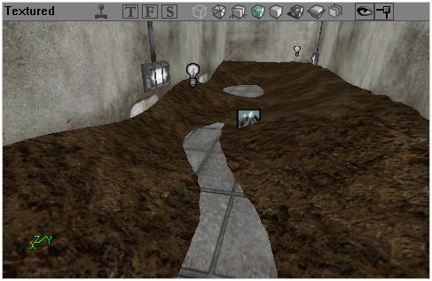 we'll add water there |
FYI: Since I (Freon) am french, the boolean values in the properties boxes are in french too. Vrai is for true and Faux is for false. Enjoy now 
Adding a water volume
Add a volume: Resize your red builder brush to fit the size of the room you want to fill with water (or even a little more). Use the height to determine how deep the water will be. Place your red brush where the water should be and right click on the volume button
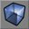
and choose WaterVolume. That's all you need for now.Adding the surface
The water volume is invisible. You could use a simple sheet to make the surface visible, but it would be a little static. Add an Actor >> Info >> FluidSurfaceInfo in the middle of your room, at the surface height.
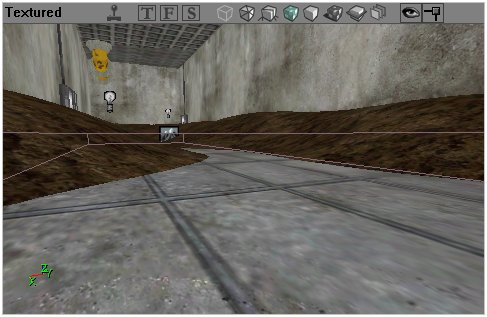 the water volume is placed at mid-height of the terrain |
- FluidSurfaceInfo → FluidXSize and FluidYSize to fit the room size
- You can also use FluidGridSpacing to determine how big the grid should be.
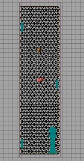 top view |
Creating the material
Basic texture
We have to create a new material to use as a surface. It will be shiny, moving and transparent.
1. We'll steal and edit a moss texture. There is a good one in Antalus (AWGlobal.utx).
You'll need to export this.
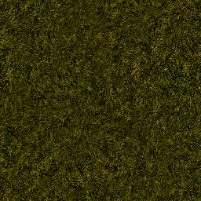 a moss texture |
Because we don't want to cover the whole surface with it, we'll use an alpha channel. In a Graphics Application like Paint Shop Pro or Photoshop, open your moss image and create a new mask (see screen shot in PSP).
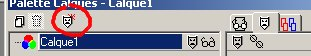 the new mask button in PSP |
An alpha channel is used to vary the transparencey in a image. The image is opaque where the alpha channel is white. Draw some stuff on the alpha channel. You'll have to save your image in a format supporting alpha chanels (.TGA). It will be store inside the file. In PSP you have to use the Save in an alpha channel in the Mask menu.
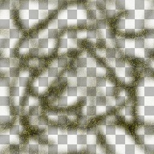 the alpha channel sets the translucency of the image |
If you want to use this moss texture for other purposes and don't need the alpha channel, hide it before saving.
2. Import the texture. Using MyLevel in the package field will force the editor to save the textures inside the map file. Name the texture mossmask or something similar. You can put it in a group if you have a lot of textures in the MyLevel package.
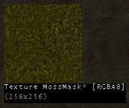 the texture |
Note: when opening a level containing textures (or something else) in a MyLevel package, you may want to relaunch the editor before opening another map (yours  ) otherwise it could mess up your MyLevel package.
) otherwise it could mess up your MyLevel package.
3. If you're not sure of the scale of your texture, you can resize it by creating a new material: Chose File → New in the textures browser. Use MyLevel as package, choose an appropriate name like mossmaskscaller and TexScaler in properies. Now hit New and the properties window should open. Here you can view, and edit the details of your material.
On the properties tree at the bottom, Click Material then choose your moss texture in the browser and click on the Use button in the material line. Adjust the scale of the texture with the UScale and VScale field and the position with UOffset and VOffset.
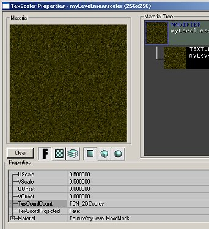 a texture scaler |
Animation
Now we are going to animate the moss.
Create a material of class TexOscillator. In the material field, put the previous texture (the scaler). Adjust the fields to your liking. UOscillationRate and OscillationRate determine how fast the texture moves. UOscillationAmplitude and UOscillationAmplitude determine how far it goes. Use small values for the amplitude and even smaller for the rate. Choose OT_Stretch for both UOscillationType and VOscillationType (the other ones are simple panning).
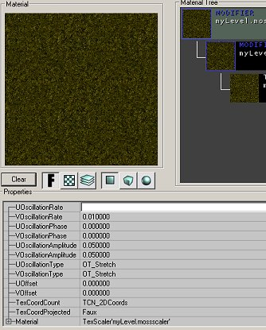 an oscillator |
Reflection
The water surface will also reflect the world. But because it can't be done in real time, we'll use predefined [environment map]?s. With the texture browser open CubMaps.utx, examine the several groups it contains. We'll create a material that blends the moss texture with a reflective texture.
Choose File → New one more time, set the package and name correctly and chose Combiner in the list. You will need to set 2 materials and 1 mask. In the first material field put the moss oscillator. In the second, put one of the cube maps in CubeMaps.utx (only pick the textures bordered in blue). Cubemap'CubeMaps.Kretzig.Kretzigcube2' is a good one for what we need.
Choose CO_Alphablend_With_Mask in CombineOperation. The mask will determine how the 2 materials will mix. Because the moss texture has an alpha channel, we will use it. Depending on how You did the mask, you may have to use the InvertMask option.
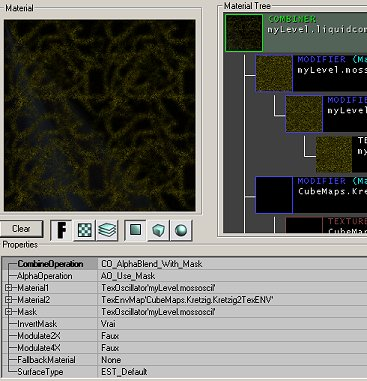 a combiner |
Translucency
We could use this material for the water surface but it would look strange. Mainly because it would be opaque Therefor we are going to create another masked texture to make it translucent. And to make the things perfect, it will fit the shape of the water zone!
The zone I want want to fill with water is bordered by a terrain and I'll make the water more translucent toward its "shores". I will use the height map of the terrain as to find the shores.
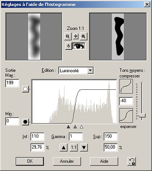 highlighting the shores with PSP |
Create a new image, the same size as the terrain height map, use the shores map as an alpha channel and save it. Don't use white in your alpha channel as the water has to be a least a little translucent.
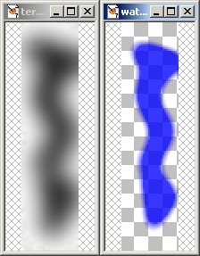 the terrain heightmap and the alpha channel |
7. Back in UnrealEd, import the texture like you did with the moss texture. Now we have to make sure that the shores of this mask will fit with the shores of the terrain. In order to do that, create a TexScaler material for this texture (see above).
8. All we have to do now is to apply the mask to the other material. Choose File → New (for the last time ), set everything and choose Shader. A shader is a material containing useful informations. Use the combiner you created as the Diffuse layer and the TexScaler (created in the 7th step) as the Opacity layer. You can set TwoSided to True and the SurfaceType to EST_Water (although I'm not sure whether it's useful or not  ).
).
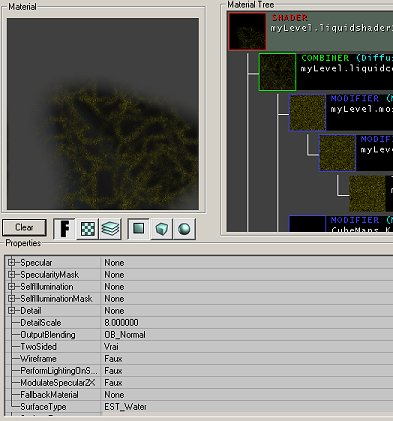 the final shader |
9. Open the FluidSurfaceInfo properties, click on Display → Skins and click on the Add button. Then pick your shader with the textures browser and choose Use.
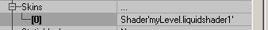 adding a skin |
You can adjust the values in the oscillator and the scalers especially the last one to fit the shores.
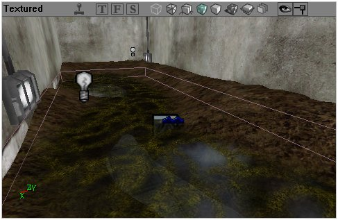 final shot |
Don't forget setting bUnlit on False in the Display properties.
Comments
Mychaeel: A very nice tutorial. Feel free to use our image uploader to put the images on our Unreal Wiki webspace; but before you do that, give them less generic file names please (something along the lines of "fluidsurfaces-1.jpg" to "fluidsurfaces-9.jpg" would do fine instead of "tut1.jpg" to "tut9.jpg").
Freon: Tarquin told me i could upload them but that you were a little short on web space I'll let the zipfile on my homepage
Tarquin: We're not short on space; what I meant is that I'm trying to cut down on duplication: for example, many tutorials have a step saying "set the following surface properties" – so we only need one screenshot of the surface props window for the whole wiki. The next phase is to have pages for Basic Procedure which tute writers can just link to – take a look at that page.
Tarquin: How about we split off the part on creating a material into [Creating a material]?, since we might want to link to that specifically?
\/\/0RF: Someone please follow Tarquin's suggestion, as this tut alone clearly shows that there are a lot of different material types, with numerous differences in how they are set up. Working with materials can be a powerful tool to bring a lot of eye candy to regular textures without taxing the engine too hard, if someone could provide clear instructions on how they are built.
MadNad I wrote this tut on fluid surface that tells you how to get reflections and opacity in your water. Don't forget to add your WaterVolume to make it act like water when you enter it. http://madnad.com/ut2k3/Tutorials/Water/